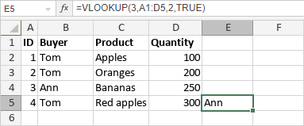

VLOOKUP funkcija
Funkcija VLOOKUP je jedna od lookup i referencijalnih funkcija. Koristi se za vertikalnu pretragu vrednosti u najlevljoj koloni tabele ili niza i vraća vrednost u istom redu na osnovu specificiranog broja kolone.
Sintaksa
VLOOKUP(lookup_value, table_array, col_index_num, [range_lookup])
Funkcija VLOOKUP ima sledeće argumente:
| Argument | Opis |
|---|---|
| lookup_value | Vrednost koju tražite. |
| table_array | Dve ili više kolona koje sadrže podatke sortirane rastućim redom. |
| col_index_num | Broj kolone u table_array, numerička vrednost veća ili jednaka 1, a manja od broja kolona u table_array. |
| range_lookup | Logička vrednost TRUE ili FALSE. Ovo je opcioni argument. Unesite FALSE za tačno poklapanje. Unesite TRUE ili izostavite za približno poklapanje; u tom slučaju, ako ne postoji vrednost koja tačno odgovara lookup_value, funkcija bira sledeću najveću vrednost manju od lookup_value. |
Napomene
Ako je range_lookup postavljen na FALSE, ali ne postoji tačno poklapanje, funkcija vraća #N/A grešku.
Kako primeniti funkciju VLOOKUP.
Primeri
Slika ispod prikazuje rezultat koji vraća funkcija VLOOKUP.
